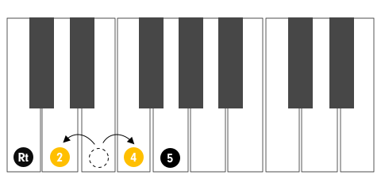
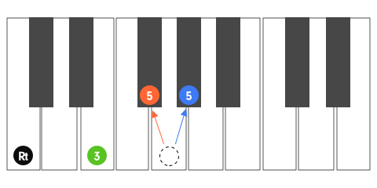

这一次是“认识新和弦名称”的一回。 我们将在七和弦的基础上进一步叠加新音，使音响变得更加丰富深邃。这是第I章中“延伸音（Tension）的运用”的延续。在此我们将重点介绍通用性最强的9度音添加。
[gt_radar_chart id=”gt-radar-genrechart” width=”” height=”240″ labels=”J-Pop,Jazz,Classic,Cinematic,Electronic,Pop,Rock” animation_type=”radarar”][gt_chart_data fill_color=”#2060db” stroke_color=”#2060db” data=”90,100,90,80,30,60,50″][/gt_radar_chart]
 1. 重访延伸音和弦（Tension Chords）
1. 重访延伸音和弦（Tension Chords）
在第I章的“七度音与延伸音的运用”中，我们学习了通过附加音符来为和弦增添复合色彩与张力摩擦。

在那个时候，我们甚至连“叠加七度”这样的专业词汇都还没正式引入。如今我们不仅认识了七和弦、六和弦，还接触了像sus4和aug这样新型态的张力变化。现在正是时候将“添加附加音”这一行为在理论层面建立严谨的体系了。
与第III章前半部分内容的本质区别
从第I章接触延伸和弦以来，一直自行尝试各种“增补摩擦音”的朋友，在第III章前半部分或许会觉得某些和弦听起来有些相似。然而，前半部分所学的变化系和弦，与延伸和弦在构思上有着本质的不同。那些和弦是通过改变原有的和弦音而成为新音，因此原有的核心和弦音中必有一位成员缺席了。




例如sus2，预设的用法往往是“通过暂时不弹3rd来制造张力悬念，待3rd出现时得到释放解决”。当乐队排练时说“这里弹sus2”，通常就自动包含着“想要营造悬念蓄力，所以这里请不要弹三音哦”的潜台词。
但很多时候我们的初衷并非如此，而单纯只是“想在大和弦原有的基础上，再加入一个2度音来丰富色彩”。

本次要讲解的，正是不是将音“挪移”，而是真正意义上的“追加”方法论。这与当年从三和弦演进到七和弦的过程一模一样，只是更上一层楼。请务必带着这一本质区别继续向下阅读。
2. 什么是九和弦？
添加2度音——这也是古典音乐理论中一脉相承的传统理念。只不过在古典理论家的构想中，他们并不认为这是在叠加“2度”。而是在1·3·5度三和弦、加上7度构成七和弦之后，在最上面继续叠置新音，将其视作叠加了“9度”。

正如同将叠置到7度的和弦统称为“七和弦”一样，将三度叠置延伸至9度的和弦家族被统称为九和弦（Ninth Chord）。
与实际八度高度无关
即使没有采用这种高高叠置的排布，而是直接将这个音放在根音紧邻上方的“2度”位置，它在理论上同样被称为“九和弦”。

这与C大和弦中的Do-Mi-Sol无论在钢琴的高低音区如何散布排列都不会改变其C和弦名称是同一个道理。忽略八度音区差异是和弦符号系统的根本准则。
11度、13度
顺带一提，如果沿着这条“串丸子（三度叠置）”之路继续叠加，4度音将作为“11度”登场，6度音将作为“13度”登场。

这些音在流行现代音乐中同样广泛运用。然而11度与13度的理论内含相当程度的复杂性。鉴于大家刚刚才掌握与其音高类似的sus4和六和弦，为了避免认知过载，本节我们先集中精力把9度和弦彻底吃透。
11度和13度的系统性理论将在第IV章后半段详细讲解。在此之前，大家不妨继续参考“七度与延伸音的运用”一文，先抛开复杂的和弦名称，凭耳朵大胆尝试。
3. 九和弦家族的和弦名称
顺着自然音阶叠置9度时，绝大多数情况下得到的都是“大9度”音程，也就是根音上方一个的音。因此在和弦命名规则上，也以叠置“大9度”时的命名最为简洁。
规则极其直观：“在七和弦的基础上叠置大9度音时，直接将数字7替换为9”。

以大七和弦为基础，记号由“Δ7”变为“Δ9”；以小七和弦为基础，则由“m7”变为“m9”。 在此需要特别留意的是，“C9”这个看似极其常规朴素的和弦名称，实际上在基础调性中却带有调外黑键（因为其基础是C7，内含降B）。不过这一点在之前区分CΔ7与C7时，大家应该已经跨过这道门槛了。
至于叠加“小9度”的情况，由于属于进阶和弦范畴，本节先不展开，留待进入第IV章后再行介绍。
属九和弦（Dominant Ninth）
顺便提一下，对于标记为“9”的和弦（如C9），与七和弦时的逻辑一样，它拥有专属别名属九和弦（Dominant Ninth）。这是为了将其与作为家族总称的“九和弦（Ninth Chord）”清晰区分开来。
基础主干和弦与九和弦
在六个自然基础和弦中添加“大9度”时，唯独IIIm和弦需要加上临时升降号。

因为Mi上方一个全音是Fa♯，而不是原调内的Fa。所以在九和弦中，IIIm是唯一特殊的，一旦使用就必须意识到它偏离了原有的调性。显然，当主旋律正好在使用还原Fa时，就不宜给伴奏和弦添加这个9度音。
使用 IIIm9 的注意事项
当某个音完全符合调性固有的自然音阶时，我们称其为属于调内自然音（Diatonic to the Key）。而在IIIm中的9th音并不属于调内自然音。如果把它放在旋律线或伴奏的最顶端音（最高音），听起来很可能会让人摸不准究竟是否要转调，因此通常采用将其巧妙藏入伴奏内层声部、弱化其突兀感的手法。

虽然这是和弦名称本身无法反映的细节，但在实践中却极其关键。这种对各和弦音高低与声部的编排，正是我们之前所说的“和弦排列配置（Voicing）”。即便是调外音，通过高明的排列融入，也能激发出前所未有的迷人听感。
4. 九和弦家族的实际声响
让我们来对比聆听一下七和弦与九和弦在音响色彩上的差异。
IVΔ7 IIm7 VIm7 IΔ7 IIIm7
这是我们非常熟悉的七和弦进行。比起基础三和弦确实更有深度，但从第II章一路听下来，难免也会觉得略微缺乏新鲜感。这时，九和弦便可大显身手：
IVΔ9 IIm9 VIm9 IΔ9 IIIm9
虽然不如从三和弦跃迁到七和弦那般剧烈颠覆，但由于制造复合摩擦色彩的音符增加到了7th和9th两个，和弦获得了层次感显著丰富的声音质感。尤其是最后的IIIm9带有临时升记号，散发出一种非同寻常的深邃意境。
调外和弦与九音
除了自然主干和弦，在诸如I7、VI7等副属和弦，以及IVm、Vm、♭VII等同主音借用和弦中，添加9度音也非常契合顺手。特别是在爵士风韵的曲调中，叠置到9度所带来的醇厚复合声响堪称绝配。
IIm9 IIIm9 VIm9 Vm9 I9
这是一段极为经典的流行进行，在叠加上9音后瞬间增添了浓郁的都市成熟感。相比于7th声音的醇和柔美（Mellow），9th则多了一丝独特的“清脆锐利感”与“悬浮飘逸感”。
5. add9 和弦
正如前面所看到的，标准九和弦位于“五层叠置”的顶端。一旦使用“Δ9”或“m9”这样的和弦记号，就自动默认包含七音（7th）。这是自古典乐时代沿袭至今的传统语法。
因此，如果我们不想要七音，单纯只想在大三和弦或小三和弦中追加一个9度音，就有一套专属的独立记法——使用“add9”和弦名称。另外有时也会用括号写成(9)，尤其在六和弦追加九音时经常会采用这种记法。

sus2、9、M9、add9，这四者在初学时往往容易混淆，请仔细对比区分：

在彻底掌握了9th之后，我们在第IV章将正式进军11th与13度的广阔天地。
总结
- 在七和弦的基础上进一步叠置大9度音得到的和弦，统称为“九和弦”。
- 和弦名称以七和弦为基准，直接将其中的数字7更改为9即可。
- 对于像IIIm9这种9音不属于调内自然音的和弦，内层声部的细腻排列（Voicing）至关重要。